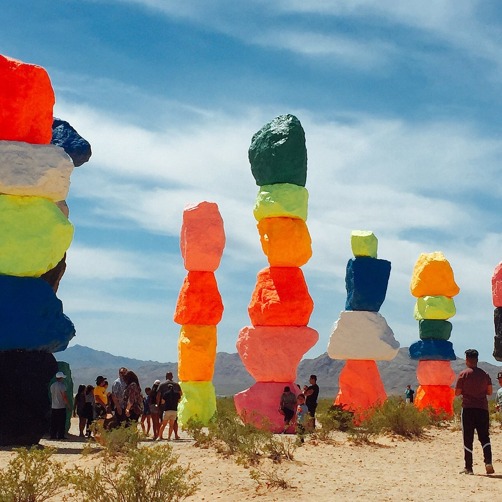

the seven magic mountains
Las Vegas - United States of America
Walk into the magical world of the Seven Magic Mountains, an amazing art place, right in the mid-desert of Las Vegas, United States.Visualize large piles of colored stones, seven of them proudly towering on a sandy area.
The creative genius behind this magical sight is Ugo Rondinone, an artist from Switzerland.He turned ordinary rocks into huge, colorful masterpieces, each as tall as a giraffe! It's like a giant, playful art party in the desert.
Therefore, why did I pick this spot? It’s not only about art that The Seven Magic Mountains are meant for looking, but an immense game of visual and fantasy sight. It is an instant flash of energy, joy, and ingenuity that converts this dullness and emptiness in the desert into a rainbow of colors and wonders.
The Seven Magic Mountains is about much more than just colored rocks in the desert. It is a dynamic art, with a story behind it. When creating this piece, Ugo Rondinone intended to infuse some liveliness into what is dry and quiet in the desert surroundings. Instead of using the standard palette colors, he painted the rocks with bright and neon colors to make them fun and vibrant.
It has been said that The Seven Magic Mountains defy explanation. For some, it is nature’s meeting with human artistry, while for others it means happiness in unexpected places. This is how I feel about paintings that encourage us to think outside the box and turn our surrounding environments into magic.
If you ever visit Las Vegas, make sure to leave your normal and see this amazing variety of colors.It is not just a pile of stones but a cheerful souvenir that at times there may art appear even somewhere in the dry and dead desert.